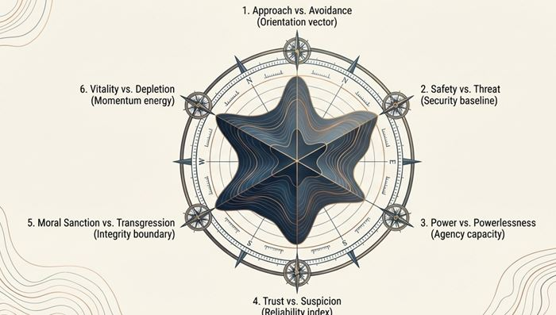

The discipline
Semantic Bathymetry™
An AI system for capturing the structure of a population's implicit mood and feelings — where it is settled, and where it is shifting.
An AI system for capturing the structure of a population's implicit mood and feelings — where it is settled, and where it is shifting.

Attractors are regions of high consensus; diffuse spaces are regions of high variance.
Every response is mapped across six axes, capturing a population's emotional stance as a continuous 3D surface.
